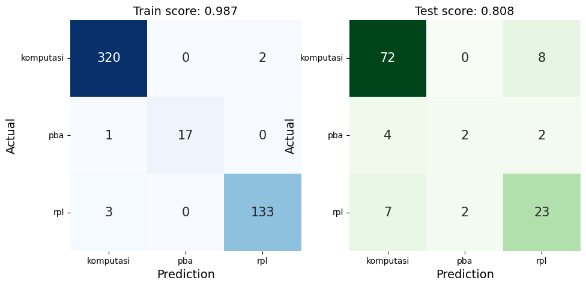

Klasifikassi Teks Word2Vec#
_= !pip install jcopml
_= !pip install gensim
_= !pip instal tqdm
_= !pip instal nltk
import os
import pandas as pd #pandas
import numpy as np #numpy
from tqdm.auto import tqdm
import nltk
from nltk.tokenize import word_tokenize
from nltk.corpus import stopwords
from gensim.models import Word2Vec
nltk.download('stopwords')
[nltk_data] Downloading package stopwords to /root/nltk_data...
[nltk_data] Unzipping corpora/stopwords.zip.
True
stop_words = set(stopwords.words('indonesian'))
df = pd.read_csv('https://raw.githubusercontent.com/farisulhaq/dataset/main/pta_final.csv')
df
| stem | label | |
|---|---|---|
| 0 | sistem informasi akademik siakad sistem inform... | rpl |
| 1 | berjalannya koneksi jaringan komput lancar gan... | rpl |
| 2 | web server perangkat lunak server berfungsimen... | rpl |
| 3 | seir perkembangan teknolog didunia muncul tekn... | komputasi |
| 4 | gerak pekerja game memiliki genr rt realtim st... | komputasi |
| ... | ... | ... |
| 591 | investasi saham memiliki resiko kerugian dikar... | komputasi |
| 592 | inform retriev ir pengambilan informasi tersim... | pba |
| 593 | klasifikasi citra prose pengelompokan piksel c... | komputasi |
| 594 | identifikasi atribut pejalan kaki salah peneli... | komputasi |
| 595 | topik deteksi objek menarik perhatian perkemba... | komputasi |
596 rows × 2 columns
nltk.download('punkt')
[nltk_data] Downloading package punkt to /root/nltk_data...
[nltk_data] Unzipping tokenizers/punkt.zip.
True
sentences = [word_tokenize(kata) for kata in tqdm(df.stem)]
Train Word2Vec Model#
model_word2vec = Word2Vec(sentences, vector_size=128, window=5, min_count=3, workers=4, sg=0, hs=0, epochs=1000)
KeyboardInterruptTraceback (most recent call last)
<ipython-input-9-948d02267c0e> in <cell line: 1>()
----> 1 model_word2vec = Word2Vec(sentences, vector_size=128, window=5, min_count=3, workers=4, sg=0, hs=0, epochs=1000)
/usr/local/lib/python3.10/dist-packages/gensim/models/word2vec.py in __init__(self, sentences, corpus_file, vector_size, alpha, window, min_count, max_vocab_size, sample, seed, workers, min_alpha, sg, hs, negative, ns_exponent, cbow_mean, hashfxn, epochs, null_word, trim_rule, sorted_vocab, batch_words, compute_loss, callbacks, comment, max_final_vocab, shrink_windows)
428 self._check_corpus_sanity(corpus_iterable=corpus_iterable, corpus_file=corpus_file, passes=(epochs + 1))
429 self.build_vocab(corpus_iterable=corpus_iterable, corpus_file=corpus_file, trim_rule=trim_rule)
--> 430 self.train(
431 corpus_iterable=corpus_iterable, corpus_file=corpus_file, total_examples=self.corpus_count,
432 total_words=self.corpus_total_words, epochs=self.epochs, start_alpha=self.alpha,
/usr/local/lib/python3.10/dist-packages/gensim/models/word2vec.py in train(self, corpus_iterable, corpus_file, total_examples, total_words, epochs, start_alpha, end_alpha, word_count, queue_factor, report_delay, compute_loss, callbacks, **kwargs)
1071
1072 if corpus_iterable is not None:
-> 1073 trained_word_count_epoch, raw_word_count_epoch, job_tally_epoch = self._train_epoch(
1074 corpus_iterable, cur_epoch=cur_epoch, total_examples=total_examples,
1075 total_words=total_words, queue_factor=queue_factor, report_delay=report_delay,
/usr/local/lib/python3.10/dist-packages/gensim/models/word2vec.py in _train_epoch(self, data_iterable, cur_epoch, total_examples, total_words, queue_factor, report_delay, callbacks)
1432 thread.start()
1433
-> 1434 trained_word_count, raw_word_count, job_tally = self._log_epoch_progress(
1435 progress_queue, job_queue, cur_epoch=cur_epoch, total_examples=total_examples,
1436 total_words=total_words, report_delay=report_delay, is_corpus_file_mode=False,
/usr/local/lib/python3.10/dist-packages/gensim/models/word2vec.py in _log_epoch_progress(self, progress_queue, job_queue, cur_epoch, total_examples, total_words, report_delay, is_corpus_file_mode)
1287
1288 while unfinished_worker_count > 0:
-> 1289 report = progress_queue.get() # blocks if workers too slow
1290 if report is None: # a thread reporting that it finished
1291 unfinished_worker_count -= 1
/usr/lib/python3.10/queue.py in get(self, block, timeout)
169 elif timeout is None:
170 while not self._qsize():
--> 171 self.not_empty.wait()
172 elif timeout < 0:
173 raise ValueError("'timeout' must be a non-negative number")
/usr/lib/python3.10/threading.py in wait(self, timeout)
318 try: # restore state no matter what (e.g., KeyboardInterrupt)
319 if timeout is None:
--> 320 waiter.acquire()
321 gotit = True
322 else:
KeyboardInterrupt:
Save Word2Vec Model#
folder = 'w2v/'
path = '/content/drive/MyDrive/prosaindata/prosaindata/' + folder
os.makedirs(path, exist_ok=True)
model_word2vec.save(path+'text_klasifikasi.w2v')
Encoding#
from gensim.models import Word2Vec
w2v = Word2Vec.load(path+'text_klasifikasi.w2v').wv
def sent_vector(sentence, w2v_model, stopword):
vecs = [w2v_model[kata.lower()] for kata in (sentence) if kata in w2v_model]
sent_vec = np.mean(vecs, axis=0)
return sent_vec
def norm_sent_vector(sentence, w2v_model, stopword):
vecs = [w2v_model[kata.lower()] for kata in (sentence) if kata not in stopword]
norm_vecs = [vec / np.linalg.norm(vec) for vec in vecs if np.linalg.norm(vec) > 0]
sent_vec = np.mean(norm_vecs, axis=0)
return sent_vec
vecs = [sent_vector(kata, w2v, stop_words) for kata in sentences]
vecs = np.array(vecs)
vecs.shape
(596, 128)
Dataset split#
from sklearn.model_selection import train_test_split
X = vecs
y = df.label
X_train, X_test, y_train, y_test = train_test_split(X, y, test_size=0.2, random_state=42)
X_train.shape, X_test.shape
((476, 128), (120, 128))
Training Model#
from sklearn.svm import SVC
from sklearn.pipeline import Pipeline
from sklearn.model_selection import RandomizedSearchCV
from jcopml.tuning import random_search_params as rsp
from sklearn.feature_extraction.text import CountVectorizer
pipeline = Pipeline([
('algo', SVC(max_iter=500))
])
model = RandomizedSearchCV(pipeline, rsp.svm_params, cv=4, n_iter=50, n_jobs=-1, verbose=1, random_state=42)
model.fit(X_train, y_train)
print(f'best_parameter: {model.best_params_}')
print(model.score(X_train, y_train), model.best_score_, model.score(X_test, y_test))
Fitting 4 folds for each of 50 candidates, totalling 200 fits
best_parameter: {'algo__C': 4.418441521199726, 'algo__gamma': 0.010547383621352041}
0.9873949579831933 0.8088235294117647 0.8083333333333333
/usr/local/lib/python3.10/dist-packages/sklearn/svm/_base.py:299: ConvergenceWarning: Solver terminated early (max_iter=500). Consider pre-processing your data with StandardScaler or MinMaxScaler.
warnings.warn(
Evaluasi#
from jcopml.plot import plot_confusion_matrix
plot_confusion_matrix(X_train, y_train, X_test, y_test, model)
